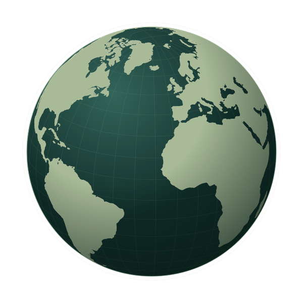
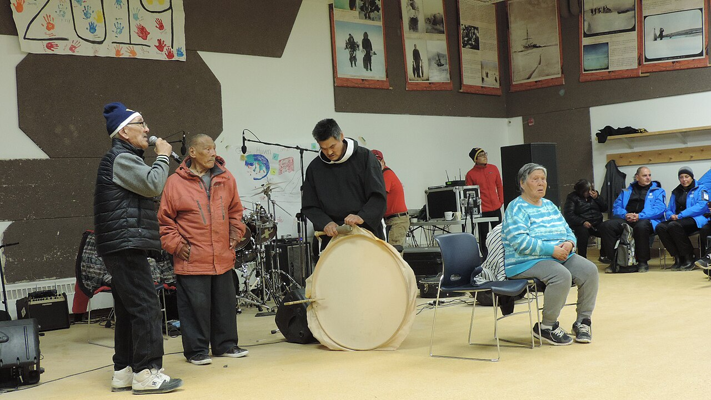
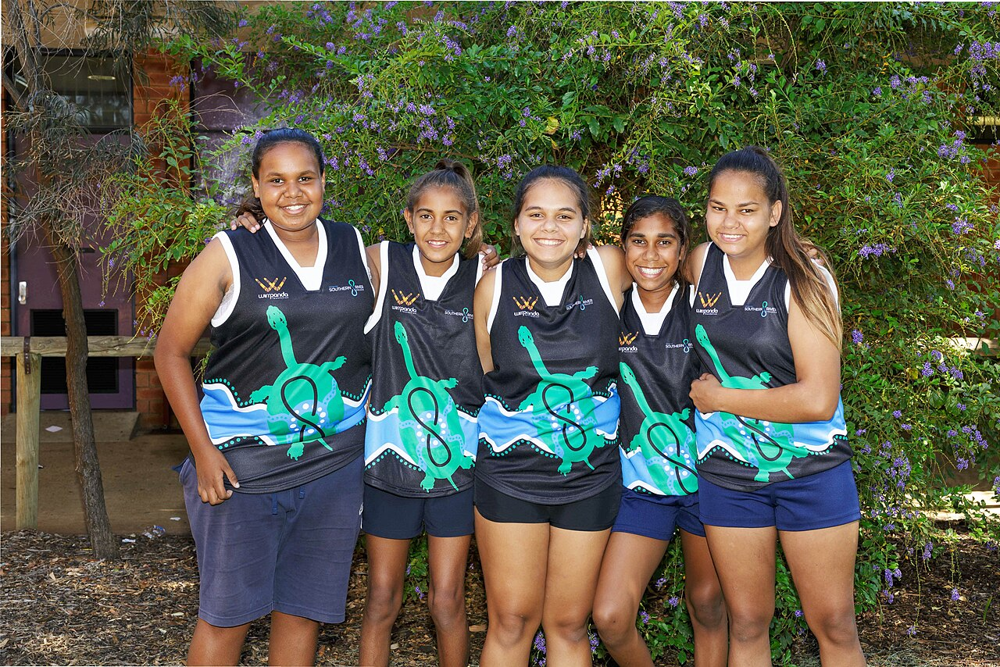
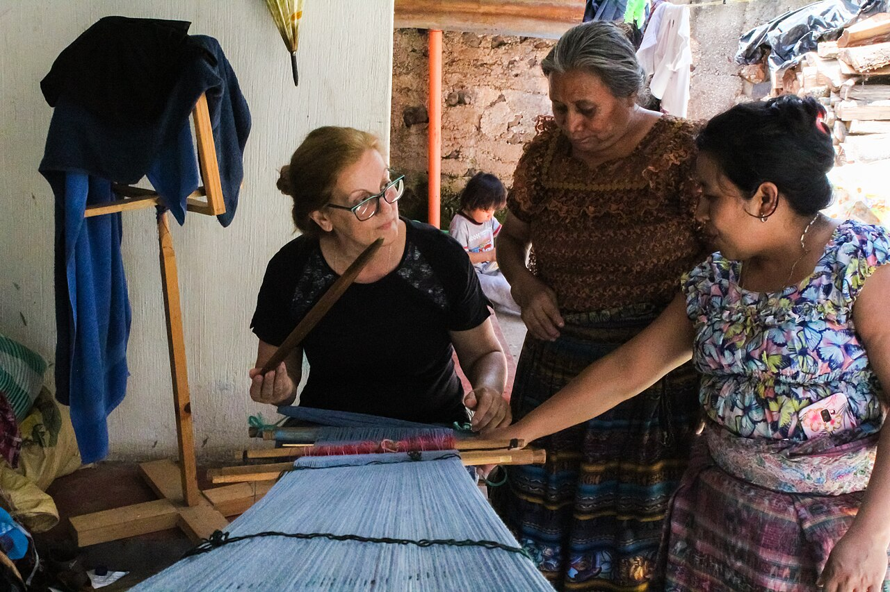

Explore 8 perspectives on culture, connection and access to care.
Choose a place. Get curious.

Drag to turn · All stories are available without animation

Music at the community centre, Gjoa Haven, Nunavut, 2019.Credit ↗
Nunavut, Canada 01 / 08
Inuit communities
Inuit knowledge, young people and local leadership are central to prevention in Nunavut. Care needs to make sense in the language and life of a community.
Read the story & sources +
In June 2025, Nunavut’s government and Nunavut Tunngavik Inc. reaffirmed that suicide remains a crisis in the territory.
Inuit Tapiriit Kanatami identifies unequal access to quality healthcare and the need for accessible, Inuit-specific mental-health support.
Nunavut’s Inuusivut Anninaqtuq action plan centres Inuit knowledge, youth participation, and community-driven prevention, including development of Inuit counsellors.
A musical gathering at Gjoa Haven’s community centre, photographed in September 2019. This independent cultural event is separate from the health initiatives described here and does not show Neorons services.

Deadly Sista Girls team, Southern River College, Western Australia.Credit ↗
Australia 02 / 08
Aboriginal and Torres Strait Islander peoples
Connection to Country, culture and community belongs at the centre of care. Aboriginal and Torres Strait Islander leadership is shaping the national approach.
Read the story & sources +
In 2025, the age-standardised suicide rate for Aboriginal and Torres Strait Islander people was 34.8 per 100,000 across six reporting jurisdictions.
The 2025–2035 national strategy calls for better access to culturally safe care, stronger community-controlled services, and a sustainable Indigenous workforce.
Developed with Gayaa Dhuwi (Proud Spirit) Australia, the strategy puts Aboriginal and Torres Strait Islander leadership, culture, kinship, and connection to Country at its centre.
NSW, Victoria, Queensland, South Australia, Western Australia and Northern Territory; excludes Tasmania and ACT. Preliminary 2025 registration data; subject to revision.
A team portrait from Southern River College’s Deadly Sista Girls education and school-engagement programme in Perth. It is not a counselling session or a Neorons programme.
Learning together at Te Papa’s Tauoma Takatā, Wellington, 2024.Credit ↗
Aotearoa New Zealand 03 / 08
Māori
Whānau, culture and belonging matter. Māori-led approaches put community wellbeing first, while the national plan calls for better access to culturally grounded support.
Read the story & sources +
In 2024/25, Māori males had a suspected-suicide rate of 28.1 per 100,000, around twice the rate for non-Māori males.
Consultation informing the 2025–2029 action plan called for more kaupapa Māori approaches and a wider range of crisis recovery and prevention supports.
Kia Piki te Ora supports community-led wellbeing and resilience.
Māori males across Aotearoa New Zealand; comparison is non-Māori males: 14.2 per 100,000 within the same report. Provisional suspected deaths; not confirmed coronial suicide findings.
Te Papa’s Tauoma Takatā workshop brought editors together to improve Wikipedia coverage of the Te Maori exhibition. This independent cultural event is separate from the mental-health programmes described here.
A Sámi-language digital workshop at Oodi, Helsinki, 2019.Credit ↗
Norwegian Sápmi 04 / 08
Sámi communities
Language is part of being understood. Sámi organisations and local communities are working to make prevention fit their culture and everyday lives.
Read the story & sources +
In 2026, the Sámi Parliament described suicide prevention as a major public-health concern in Sápmi and launched work with SANKS and local municipalities.
The project examines whether local prevention fits Sámi language and culture, responding to calls for culturally sensitive approaches and more systematic support.
Tana, Kautokeino, Hamarøy, and Røros are participating. Local knowledge and Sámi specialist expertise guide recommendations for future prevention work.
A Wikimedia Finland digital-language workshop at Oodi library in Helsinki, Finland, in June 2019. It was open to people interested in Sámi languages; it was not photographed in Sápmi or part of the Norwegian prevention initiative.
Alaska Native Science and Engineering Program students meet BSEE staff at the University of Alaska Anchorage, 2016.Credit ↗
Alaska, United States 05 / 08
Alaska Native communities
Yup’ik communities developed Qungasvik, bringing Elders, families and young people together through cultural activities chosen and adapted locally.
Read the story & sources +
In southwest Alaska, Yup’ik communities developed Qungasvik to strengthen protective factors among young people through cultural activities and local leadership. Elders, families and tribal councils help shape the work. Alaska’s 2023–2027 prevention plan also identifies workforce and transport barriers in rural communities. This is one locally developed approach within Alaska’s many distinct Native cultures, not a description of every community. The accompanying educational photograph is separate from the health initiative described here.
Across rural Alaska, long journeys and limited local staffing make consistent care harder to reach. Cultural understanding matters alongside access.
BSEE staff visited ANSEP students in Anchorage to discuss Arctic operations. This is an education activity, separate from Qungasvik and Neorons; the source does not identify the students as Yup’ik.
Jeannette Coocoo and JP Béland work on Atikamekw language recordings at Wikimania, Montreal, 2017.Credit ↗
Canada 06 / 08
First Nations communities
First Nations Health Authority’s Hope, Help and Healing toolkit supports communities to build their own prevention, intervention and healing plans.
Read the story & sources +
First Nations communities have distinct languages, histories and approaches to wellbeing. In British Columbia, the First Nations Health Authority’s Hope, Help and Healing toolkit helps communities plan prevention, responses to crisis and support after a death. National wellness guidance places culture, family and community priorities at the centre of care. It also identifies the need for more coordinated, culturally safe services. These are examples of community planning, not a single programme shared by every First Nation.
Care that communities can shape themselves, with cultural safety, sustained local capacity and better connections between services and everyday life.
A Lingua Libre language-recording workshop at Wikimania 2017 in Montreal. This independent activity is separate from the British Columbia health-planning example and from Neorons programmes.
Reading together at Kuaray Rete school, Karanda’ty Mbyá-Guarani community, Cachoeirinha, Rio Grande do Sul, Brazil.Credit ↗
Brazil 07 / 08
Guarani communities
In coastal Brazil, Mbyá-Guarani leaders shape mental-health work with OTSS, combining local knowledge, youth participation and public-health practice.
Read the story & sources +
In coastal São Paulo and Rio de Janeiro, Mbyá-Guarani representatives help design mental-health work with the Forum of Traditional Communities, OTSS and Fiocruz. The approach brings cultural knowledge into community care and considers pressures on land, food security and everyday life. A public-health account describes leaders and young people shaping the response to youth suicide. The school photograph shows a different Mbyá-Guarani community in Rio Grande do Sul; it does not document that health initiative.
Support that respects Guarani ways of life, with young people involved and attention to pressures on culture, territory and wellbeing.
Learning at Kuaray Rete school in Rio Grande do Sul. This Mbyá-Guarani education activity is separate from the coastal São Paulo/Rio de Janeiro health initiative and is not a Neorons programme.

Sharing weaving knowledge at a loom in Guatemala, 2019.Credit ↗
Guatemala 08 / 08
Maya communities
Community leaders and health workers in San Marcos and Quiché trained in locally adapted support, using Maya Mam and Ixil.
Read the story & sources +
During the COVID-19 response, Asociación IDEI, Guatemala’s Ministry of Health and PAHO supported mental-health training in Maya Mam and Ixil in San Marcos and Quiché. Community leaders also received training, while a communication programme used radio, print and digital media to address stigma and improve access. This is a practical example of support adapted to language and place. It is not evidence of a Maya-wide suicide rate, nor proof of current coverage in every community.
Mental-health information and support in local languages, delivered with cultural understanding and less stigma around asking others for help.
A discussion around a loom in Guatemala, photographed in August 2019. The source does not identify a town or each participant’s community. This independent craft activity is not the Mam/Ixil health training or a Neorons session.
These are independent community stories, not Neorons project locations or partnerships. Photography & credits ↗
What we take from this
Listen first. Build with care.
A crisis number can exist and still leave gaps. Language, trust and local support matter too.
your words. your meaning.
More than translation.
Build with the people who speak a language. Listen to its accents, local expressions and the things a translation can miss.
ask. then listen.
Community leadership first.
People should decide how a service fits into their lives, what information it uses and when to say no.
far away. still connected.
Make room for everyday realities.
Phone access, cost, connectivity and somewhere private to talk all shape whether a conversation is possible.
a conversation. a next step.
Keep people in the picture.
AI cannot provide all the care someone may need. Local collaboration needs trained people, clear limits and agreed routes to support.
Our design priorities for future collaboration. They do not describe current Indigenous-language coverage or local partnerships.
Inside the phone service
A familiar voice. A different way in.
Our multilingual AI phone service starts with a conversation. Take a look inside.
A familiar phone conversation. A different way to reach out.
Multilingual conversational AI02 / Listen
Your words. In focus.
Speech recognition turns spoken words into text. A conversation begins to take shape.
From sound to language03 / Compose
A conversation. Carried forward.
A language model works with the text of the conversation to compose a response, one piece at a time.
Context · language · response04 / Respond
Words become a voice again.
Speech synthesis turns response text into spoken audio. Ready for the next turn.
A response you can hear
soundlanguageconnection
neorons
A SPACE TO SPEAK
A little conversation.
Speak. Listen. Connect.
nIn conversationVisualised voice transcript
I’d like to talk.
What’s been on your mind?
I’m finding college overwhelming.
Whathasfelthardesttoday?
A conversation, in words.
SPOKEN WORDS, IN FOCUS
“I’d like to talk.”
A RESPONSE TAKING SHAPE
Whathasfelt hardesttoday?
Language model · illustrative response
◖A response, spoken back.
ILLUSTRATIVE CONVERSATION · NOT A LIVE CALL
Scroll to exploreTap a chapter ↓
Technology, with people at the centre
Less friction. More ways to connect.
Voice offers a way to engage through speaking and listening. Multilingual interaction extends that idea across languages.
An illustrative walkthrough of voice AI, with a fictional conversation shown as text. The interface, models, and language coverage shown here do not specify Neorons’ deployed implementation.
Read the example conversation +
Caller
I’d like to talk.
AI
What’s been on your mind?
Caller
I’m finding college overwhelming.
AI
What has felt hardest today?
The science, in plain language +
Speech recognition maps audio to text. A language model uses that text and preceding conversation to generate a response. Speech synthesis then produces spoken audio.
Accents, background noise, and language changes can affect recognition. Language models can be wrong; fluency alone does not establish reliability or clinical suitability.